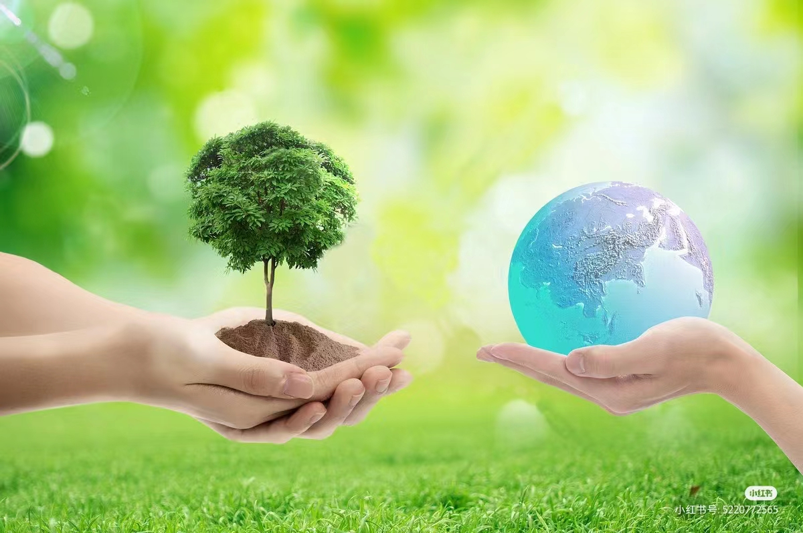
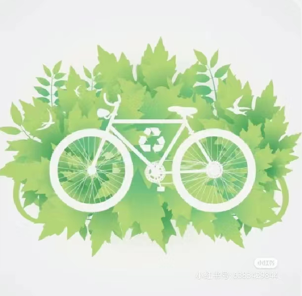
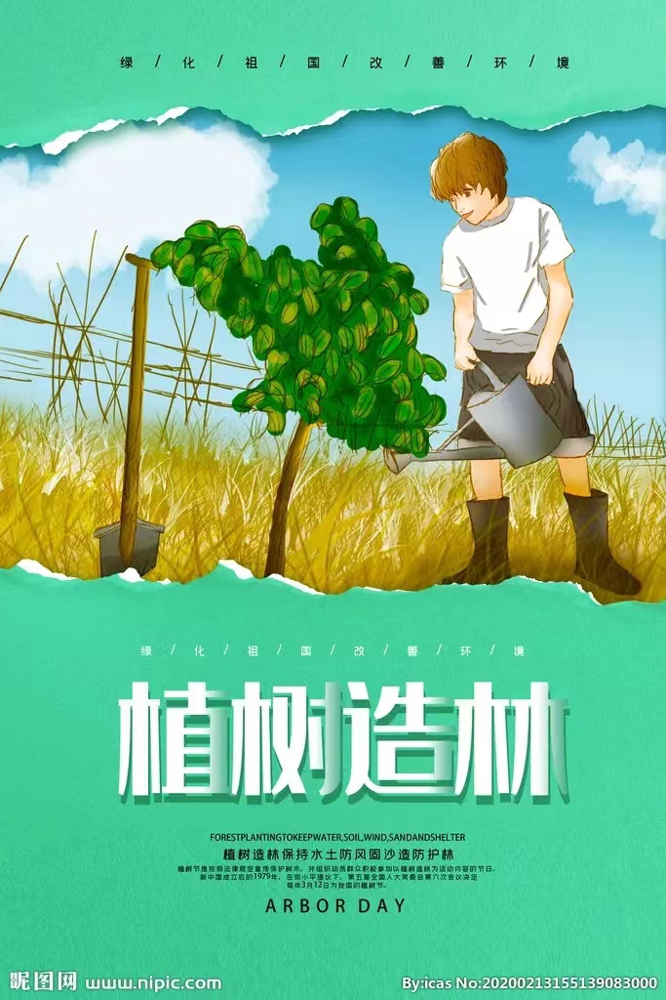
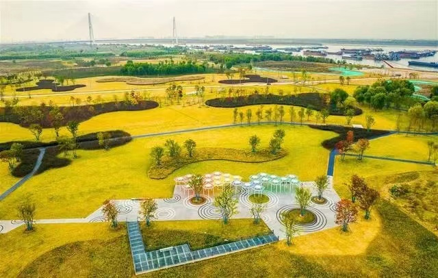

节能减排
呼吁大家节约能源，减少能源消耗。可以通过使用高效节能的电器设备、鼓励家庭和企业进行节水节电等方式来达到节能减排的目的。

绿色出行
倡导使用公共交通工具、骑自行车、步行等低碳出行方式，减少机动车的使用。也可以鼓励人们拼车或共享交通工具，以减少汽车尾气的排放。
|  | ||||
| 首页 | 环境问题 | 环保措施 | 未来期盼 | 环保宣言 |
| 低碳生活 | |
节能减排 呼吁大家节约能源，减少能源消耗。可以通过使用高效节能的电器设备、鼓励家庭和企业进行节水节电等方式来达到节能减排的目的。 |
|
绿色出行 倡导使用公共交通工具、骑自行车、步行等低碳出行方式，减少机动车的使用。也可以鼓励人们拼车或共享交通工具，以减少汽车尾气的排放。 |
 |
| 生态工程 | |
植树造林 植树造林是新造或更新森林的生产活动，它是培育森林的一个基本环节。植树有益于子孙后代，“先人留下浓荫树, 后辈儿孙好乘凉。" 种植面积较大而且将来能形成森林和森林环境的，则称为造林。如果面积很小，将来不能形成森林和森林环境的，则称为植树。造林的基本措施是：适地适树，细致整地，良种壮苗，适当密植，抚育保护，工具改革以及可能的灌水、施肥。 |
 |
生态工程建设 生态工程是指应用生态系统中物质循环原理，结合系统工程的最优化方法设计的分层多级利用物质的生产工艺系统，其目的是将生物群落内不同物种共生、物质与能量多级利用、环境自净和物质循环再生等原理与系统工程的优化方法相结合，达到资源多层次和循环利用的目的。 |
 |